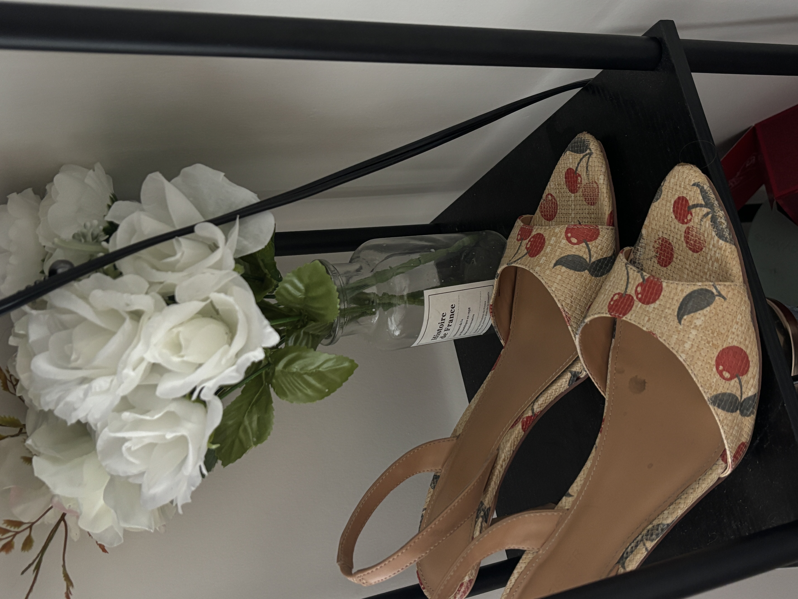
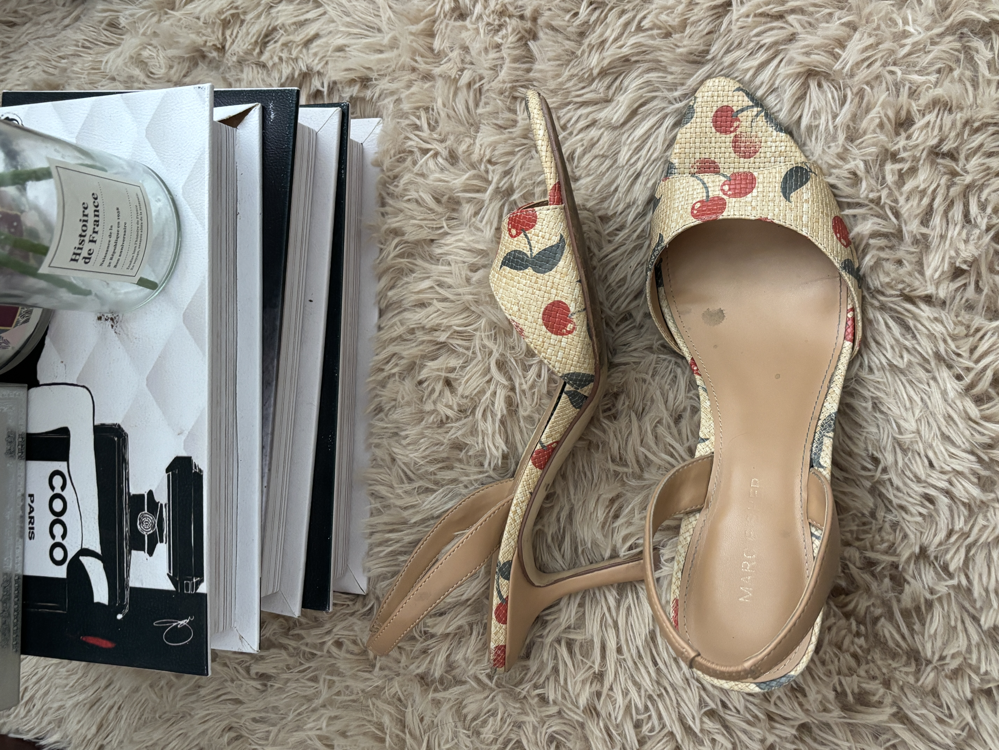
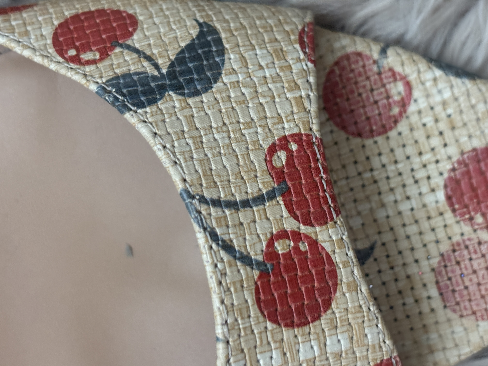
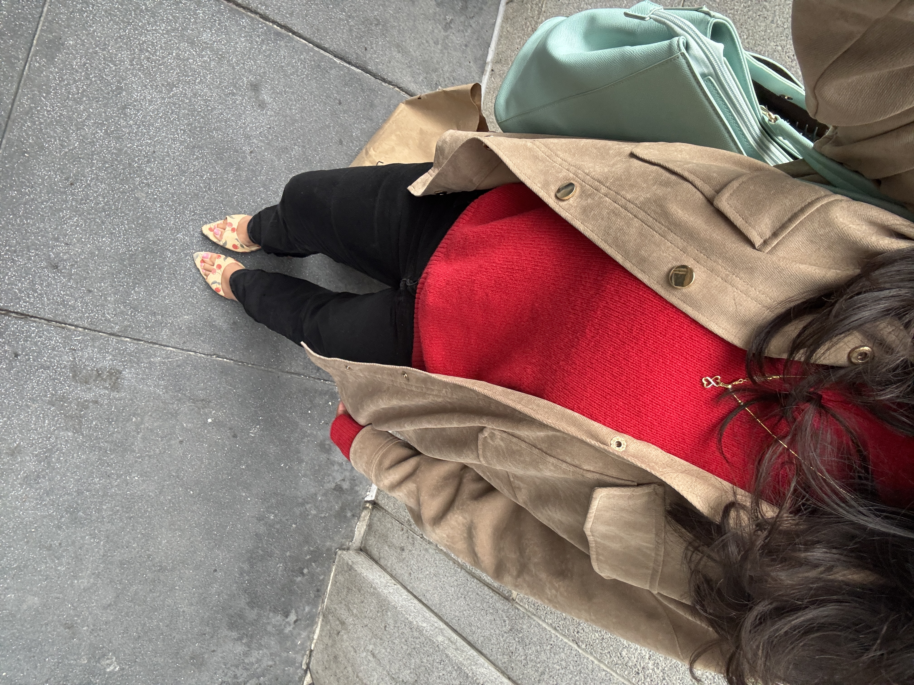

Marc Fisher
Cherry Gloss
Found theese cuties about 2 months ago on sale! They stood out to me because the heel was sharp but also because of the cherry details.
Details
- Material: woven feel
- Location:DSW
- Comfort: 7/10 - never bit me but tall heel!
- Best for: picnics, coffee dates, everyday heel